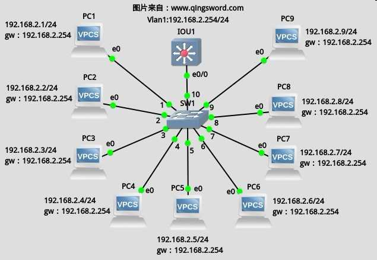
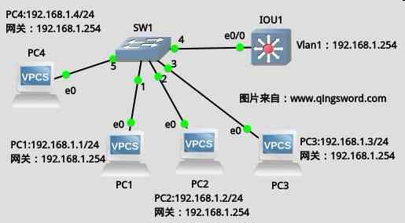
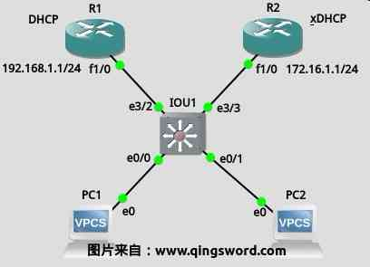

[CCNA图文笔记]-30-交换机安全浅析
引言
这篇文章介绍交换机上最常见的几个安全威胁，包括MAC地址泛洪，伪DHCP服务器欺骗，ARP中间人欺骗等。
文章目录
0×1.如何查看某IP所属端口
实际工作中的交换机上的MAC地址可能有几百甚至几千条，想从这些条目中用眼睛找出某个IP对应MAC地址或者某个MAC地址对应端口无疑是一件费时间的事情，下面这个方法可以很快的查找出某个IP对应的MAC和端口，首先配置下面的拓扑图（图1），然后在IOU交换机中，查找一下192.168.1.2的MAC在交换机MAC表中对应了哪个端口（本例图中很明显可以看出，所有PC的MAC地址在IOU交换机MAC表中都对应了e0/0端口，但真实环境可能没有这种直观的拓扑图）：
上图中，IOU1是IOU虚拟机中的交换机，3台vpsc模拟3台PC，SW1是GNS3中不可网管交换机"Ethernet switch"；
PC1~3配置：
/*依次进入PC1~3控制台，使用下面的命令配置各PC，本例仅给出PC1的配置*/ vpcs> set pcname PC1 PC1> ip 192.168.1.1/24 192.168.1.254 Checking for duplicate address... PC1 : 192.168.1.1 255.255.255.0 gateway 192.168.1.254
IOU交换机配置：
IOU1#conf t IOU1(config)#host IOU-SW IOU-SW(config)#int vlan1 IOU-SW(config-if)#ip add 192.168.1.254 255.255.255.0 IOU-SW(config-if)#no shut IOU-SW(config-if)#end
在PC1~3上面启用连续ping，模拟与外界的通信：
/*30秒ping一次网关，本例仅给出PC1的命令*/ PC1> ping 192.168.1.254 -t -i 30000
此时查看交换机上的arp表，应该能看到下面的输出：
IOU-SW#show arp Protocol Address Age (min) Hardware Addr Type Interface Internet 192.168.1.1 0 0050.7966.6800 ARPA Vlan1 Internet 192.168.1.2 0 0050.7966.6801 ARPA Vlan1 Internet 192.168.1.3 0 0050.7966.6802 ARPA Vlan1 Internet 192.168.1.254 - aabb.cc80.0100 ARPA Vlan1 /*假如看到的不是4条，而是几百条甚至更多，想找出某个IP对应的MAC以及在MAC表中对应的端口，可以使用下面的方法*/ /*首先找出目标IP对应的MAC地址*/ IOU-SW#show arp | include 192.168.1.2 Internet 192.168.1.2 1 0050.7966.6801 ARPA Vlan1 Internet 192.168.1.254 - aabb.cc80.0100 ARPA Vlan1 /*使用找到的MAC地址获得对应的端口，本例为e0/0，与拓扑一致*/ IOU-SW#show mac address-table | include 0050.7966.6801 1 0050.7966.6801 DYNAMIC Et0/0
不要关闭PC1~3的ping，继续下面的实验。
0×2.MAC地址泛洪防范
MAC地址泛洪(Flooding)攻击的原理：
根据交换机工作原理，即根据数据帧中的源MAC地址进行学习。当某台主机伪造大量的虚假MAC地址发往交换机，交换机的地址表容量有限，当交换机的MAC地址表被填满之后，交换机将不再学习其他MAC地址，此时不论是单播组播，交换机都进行泛洪转发；这样，攻击主机只需要在本地开启一个抓包软件即可捕获局域网中的所有数据包；MAC地址表的老化时间默认是5分钟，为了保证这种攻击有效性，攻击主机必须持续发动攻击。
MAC地址泛洪攻击的防范方法：
可以在接入端口上配置每个端口允许学习的MAC地址数量；
/* * 将交换机端口配置成接入端口，三层交换机端口或二层的主干端口都不支持端口安全， * 端口安全只能配置在二层的接入端口上 */ IOU-SW#conf t IOU-SW(config)#int e0/0 /将端口e0/0设置成接入端口/ IOU-SW(config-if)#switchport mode access /*开启端口安全*/ IOU-SW(config-if)#switchport port-security /*允许最大学习3个MAC地址*/ IOU-SW(config-if)#switchport port-security maximum 3 /*查看一下违规可以进行的操作*/ IOU-SW(config-if)#switchport port-security violation ? /*阻止新的MAC学习*/ protect Security violation protect mode /*大致功能同上*/ restrict Security violation restrict mode /*关闭端口（慎用）*/ shutdown Security violation shutdown mode /*这里选择保护，本例即超过3 MAC后不学习新的MAC*/ IOU-SW(config-if)#switchport port-security violation protect IOU-SW(config-if)#exit /*命令简写，效果同上*/ IOU-SW(config)#int e0/0 IOU-SW(config-if)#swi m a IOU-SW(config-if)#swi po IOU-SW(config-if)#swi po max 3 IOU-SW(config-if)#swi po v p IOU-SW(config-if)#end
使用下面的命令可以查看某个接入端口的安全规则：
IOU-SW#show port-security int e0/0 /*开启了端口安全*/ Port Security : Enabled Port Status : Secure-up Violation Mode : Protect Aging Time : 0 mins Aging Type : Absolute SecureStatic Address Aging : Disabled /*最大可学习MAC数*/ Maximum MAC Addresses : 3 /*已经学习到的MAC数*/ Total MAC Addresses : 3 Configured MAC Addresses : 0 Sticky MAC Addresses : 0 Last Source Address:Vlan : 0050.7966.6800:1 /*违规次数*/ Security Violation Count : 0
现在增加一台vpcs，配置IP如下图所示：
使用PC4去ping交换机的Vlan1，发现ping不通，这是因为IOU-SW的mac表中已经学习了三台设备的mac，根据我们的端口安全配置，交换机不会再学习PC4的mac，如果将交换机的端口安全violation设置成shutdown，再用PC4去ping一次，就会让e0/0接口直接关闭：
IOU-SW#conf t IOU-SW(config)#int e0/0 IOU-SW(config-if)#swi por vi shutdown /*此时PC4 ping一下192.168.1.254，在交换机上就出现了下面的提示，e0/0已经关闭*/ *May 15 10:40:37.431: %PM-4-ERR_DISABLE: psecure-violation error detected on Et0/0, putting Et0/0 in err-disable state *May 15 10:40:37.431: %PORT_SECURITY-2-PSECURE_VIOLATION: Security violation occurred, caused by MAC address 0050.7966.6803 on port Ethernet0/0. *May 15 10:40:38.431: %LINEPROTO-5-UPDOWN: Line protocol on Interface Ethernet0/0, changed state to down *May 15 10:40:39.432: %LINK-3-UPDOWN: Interface Ethernet0/0, changed state to down /*接口已经关闭*/ IOU-SW#show ip int b Interface IP-Address OK? Method Status Protocol Ethernet0/0 unassigned YES unset down down /*查看端口安全信息可以看到"Security Violation Count"计数变成了1*/ IOU-SW#show port-security int e0/0 Port Security : Enabled Port Status : Secure-shutdown Violation Mode : Shutdown Aging Time : 0 mins Aging Type : Absolute SecureStatic Address Aging : Disabled Maximum MAC Addresses : 3 Total MAC Addresses : 0 Configured MAC Addresses : 0 Sticky MAC Addresses : 0 Last Source Address:Vlan : 0050.7966.6803:1 Security Violation Count : 1
交换机可以使用range命令一次配置多个端口：
/*统一配置交换机的e1/0至e1/2以及e2/1至e2/3号端口*/ IOU-SW(config)#int range e1/0-2,e2/1-3 IOU-SW(config-if-range)#swi m a IOU-SW(config-if-range)#swi po IOU-SW(config-if-range)#swi po max 10 IOU-SW(config-if-range)#swi po v p IOU-SW(config-if-range)#end
0×3.DHCP欺骗防范
下图中，R1运行了DHCP服务，R2也运行了DHCP服务，R1-2和PC1-2连接在IOU虚拟机中运行的交换机中，PC1-2是两台vpcs来模拟PC终端，现在如果让两台vpcs自动获取IP，则可能随机从R1或R2上获取到IP地址（看谁先应答），如果此时R1所在线路出现故障，那么全部的PC将获得R2上DHCP地址池中的地址，如果连接R2的线路存在安全隐患，就有可能让其他人使用这种方法在这条线路上搭建一个DHCP服务器来欺骗正常的PC获取到他指定的IP，请看下面的实例：
R1配置：
R1>en R1#conf t R1(config)#int f1/0 R1(config-if)#ip add 192.168.1.1 255.255.255.0 R1(config-if)#no shut R1(config-if)#exit R1(config)#ip dhcp excluded-address 192.168.1.1 R1(config)#ip dhcp pool 192pool R1(dhcp-config)#network 192.168.1.0 255.255.255.0 R1(dhcp-config)#default-router 192.168.1.1 R1(dhcp-config)#dns-server 192.168.1.1 R1(dhcp-config)#domain-name www.qingsword.com R1(dhcp-config)#lease 1 R1(dhcp-config)#end
R2配置：
R2>en R2#conf t R2(config)#int fa 1/0 R2(config-if)#ip add 172.16.1.1 255.255.255.0 R2(config-if)#no shut R2(config-if)#exit R2(config)#ip dhcp excluded-address 172.16.1.1 R2(config)#ip dhcp pool 172pool R2(dhcp-config)#network 172.16.1.0 255.255.255.0 R2(dhcp-config)#default-router 172.16.1.1 R2(dhcp-config)#dns-server 172.16.1.1 R2(dhcp-config)#domain-name www.qingsword.com R2(dhcp-config)#lease 9 R2(dhcp-config)#end
PC获取IP：
/*在没有配置IOU交换机前，PC可能获取到两台路由器上的任何一个DHCP池中的IP地址*/ VPCS> ip dhcp DDORA IP 192.168.1.2/24 GW 192.168.1.1 /*释放这个IP，再次获取，多试几次，会发现IP在R1的DHCP地址池和R2地址池中交替获取*/ VPCS> ip dhcp -x VPCS> ip dhcp DDORA IP 172.16.1.2/24 GW 172.16.1.1
现在配置IOU交换机，让PC1-2只能在R1上获取，并限制其他端口DHCP请求发送速率：
IOU1#conf t /*启用DHCP防欺骗功能*/ IOU1(config)#ip dhcp snooping /* * 在Vlan1上启用DHCP防欺骗功能, * 默认情况下交换机所有端口都属于Vlan1，如果创建了其他VLAN， * 可以使用相同的方法启动在那个Vlan上的DHCP防欺骗功能, * 比如:"ip dhcp snooping vlan 2"。 */ IOU1(config)#ip dhcp snooping vlan 1 /*设置下面这几个端口为可信任端口，不可信任端口将不会接受DHCP应答包，如果可信端口中不包含与PC相连的端口，那么PC也不能接收到DHCP应答包了*/ IOU1(config)#int range e3/2,e0/0,e0/1 IOU1(config-if)#ip dhcp snooping trust IOU1(config-if)#exit /* * 限制这个交换机上其他端口的DHCP请求包的发送速率， * 避免非法用户发送大量DHCP请求耗尽DHCP服务器资源。 */ IOU1(config)#int range e0/2-3,e1/0-3,e2/0-3,e3/0-1,e3/3 IOU1(config-if-range)#ip dhcp snooping limit rate 2 IOU1(config-if-range)#end
现在再从PC上面用DHCP获取IP，就只能获取到R1上面的IP了：
VPCS> ip dhcp -x VPCS> ip dhcp DDORA IP 192.168.1.3/24 GW 192.168.1.1
0×4.ARP攻击原理与防范
这一部分我专门写了篇两文章[Windows环境下局域网ARP攻击实现与防范][Linux环境下ARP攻击的实现与防范]；文中提到了局域网ARP攻击形成的原因，如何发动攻击以及如何防范。想要进一步了解的朋友可以参考一下这两篇文章。
在一个小型局域网中，可以使用双向绑定的方法，在计算机上使用arp命令，或第三方ARP防火墙绑定网关MAC，然后在交换设备或路由上使用下面的命令静态绑定计算机IP对应的MAC地址：
/*查看R1上的arp地址表*/ R1#show arp Protocol Address Age (min) Hardware Addr Type Interface Internet 192.168.1.1 - cc01.0f47.0010 ARPA FastEthernet1/0 Internet 192.168.1.3 37 0050.7966.6801 ARPA FastEthernet1/0 Internet 192.168.1.2 16 0050.7966.6800 ARPA FastEthernet1/0 /*静态绑定192.168.1.2这个地址的MAC，前面是要绑定的IP后面是个IP对应的MAC地址*/ R1#conf t R1(config)#arp 192.168.1.2 0050.7966.6800 arpa R1(config)#end /*再次查看R1上的arp地址表发现静态绑定后，arp条目没有了失效时间*/ R1#show arp Protocol Address Age (min) Hardware Addr Type Interface Internet 192.168.1.1 - cc01.0f47.0010 ARPA FastEthernet1/0 Internet 192.168.1.3 38 0050.7966.6801 ARPA FastEthernet1/0 Internet 192.168.1.2 - 0050.7966.6800 ARPA
在一些大型的局域网中，可以在交换或路由设备上使用ARP动态绑定技术。
0×5.其他安全威胁
除上面几种交换机的完全威胁以外，还有很多我们需要注意的地方比如：
交换机远程登录密码过于简单导致的暴力破解、Telnet明文传输（在命令行登录路由器的时候建议使用SSH代替明文telnet）、CDP攻击（建议不使用这个协议的时候关闭它，因为攻击者可以从CDP信息中获得设备的IP以及IOS版本，有些IOS版本存在Bug）、DOS攻击等。